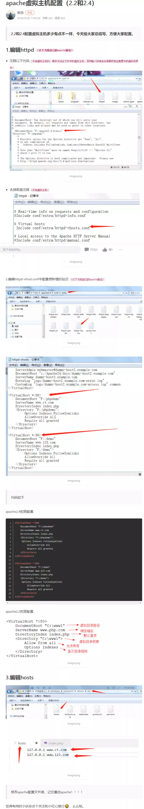

管理员cmd
cd\
cd \Apache24\bin
httpd.exe
hosts路径
C:\Windows\System32\drivers\etc
httpd -k install
httpd -k start
http://localhost //test
httpd -k stop
httpd -k restart
httpd -k uninstall

<VirtualHost *:80>
DocumentRoot "F:/phpdemo"
ServerName www.ct.com
DirectoryIndex index.php
<Directory "F:/phpdemo">
Options Indexes FollowSymlinks
AllowOverride All
Require all granted
</Directory>
</VirtualHost>
<VirtualHost *:80>
DocumentRoot "F:/demo"
ServerName www.123.com
DirectoryIndex index.php
<Directory "F:/demo">
Options Indexes FollowSymlinks
AllowOverride All
Require all granted
</Directory>
</VirtualHost>